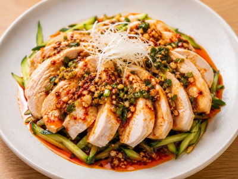
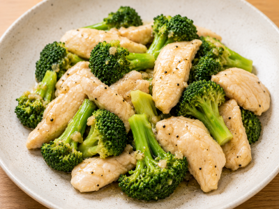
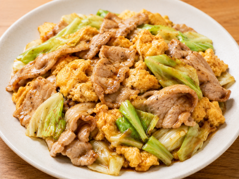

10分で作れる簡単レシピ
時間がない時にささっと作れます。
目次
うま辛サラダチキンでよだれ鶏

材料（1人分）
- サラダチキン 1個
- 長ねぎ（みじん切り）適量
- ラー油 小さじ2
- しょうゆ 大さじ1
- 酢 大さじ1
- ごま油 小さじ1
- 砂糖 小さじ1
- おろしにんにく・おろししょうが 各少々
- 白いりごま・小ねぎ（お好み）
作り方
- サラダチキンを食べやすい大きさに切る。
- ボウルに、しょうゆ・酢・ごま油・ラー油・砂糖・にんにく・しょうが・ねぎを混ぜてタレを作る。
- サラダチキンにタレをかけ、白ごまと小ねぎを散らして完成。
ポイント
辛さはラー油の量で調整できます。きゅうりやもやしを添えると、より本格的で食べ応えがあります。
ささみとブロッコリーのうま塩炒め

材料（1人分）
- ささみ 2本
- ブロッコリー 1/4株（約70〜80g）
- ごま油 小さじ1
- 鶏ガラスープの素 小さじ1/2
- 塩・こしょう 少々
- にんにく（チューブ）1〜2cm
作り方
- ささみは筋を取り、一口大に切る。ブロッコリーは小房に分け、電子レンジ（600W）で約1分30秒加熱する。
- フライパンにごま油とにんにくを入れて熱し、ささみを炒める。
- ささみに火が通ったらブロッコリーを加え、鶏ガラスープの素・塩・こしょうで味付けする。
- 全体をさっと炒め合わせたら完成。
ポイント
仕上げに黒こしょうや白ごまを振ると、風味がアップしてさらにおいしくなります。
豚たまキャベツの旨だれ炒め

材料（1人分）
- 豚こま切れ肉 100g
- キャベツ 2〜3枚（約100g）
- 卵 1個
- ごま油 小さじ1
- 【旨だれ】
- しょうゆ 小さじ2
- オイスターソース 小さじ1
- 酒 小さじ1
- 砂糖 小さじ1/2
- にんにく（チューブ）1〜2cm
- 黒こしょう 少々
作り方
- ほうれん草は4〜5cm幅に切る。
- フライパンに水とめんつゆを入れて熱し、ほうれん草とツナを加えて2〜3分煮る。
- 溶き卵を回し入れ、半熟になったら火を止める。
- ご飯にのせて完成です。
ポイント
ツナ缶は油ごと使うとコクが増し、水煮ならさっぱりと仕上がります。